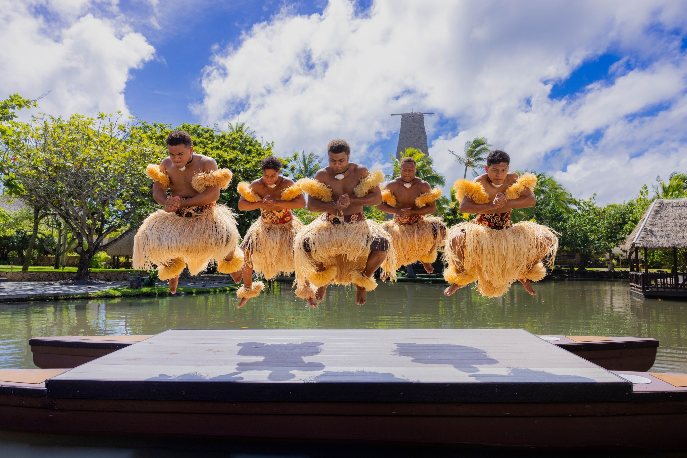

The Fijian Meke
The Fijian Meke is a traditional dance that combines movement, chanting, and music to tell stories about Fijian history, legends, and daily life. Performed during celebrations, ceremonies, and important gatherings, the meke reflects the identity and values of the Fijian people.
